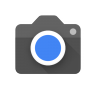

PenguinGCam

PenguinGCam
A stable GCam Mod for Exynos-based Samsung Phones
Download (v8.0)
XDA Thread
Features:
- Shooting Photo and making Video
- HDR
- PhotoSphere (on One Ui 2.1 or older)
- Lens Blur/Portrait Mode
- Panorama (on One Ui 2.1 or older)
- Timer(3s or 10s)
- Custom brightness
- Custom white balance
- Video stablilization
- Dirty lens warning
- Volume key actions(Shutter, Zoom)
- Double-tap to Zoom
- Custom resolution (Photo and Video)
- AR Stuff(Add-on)
Languages:
- English
- French
- German
- Romanian
- Turkish
Bugs:
- Panorama and PhotoSphere dont work on One Ui 2.5 or newer
- HDR is buggy on some devices